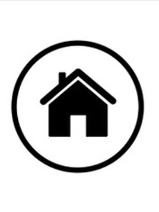
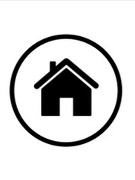

INFORMACION PERSONAL
Ingeniria Inudstrial
(5 semestre)
3044671675
Cra29c#10c-80
juanpabloqc@hotmail.com

(5 semestre)
3044671675
Cra29c#10c-80
juanpabloqc@hotmail.com
Mi nombre es Juan Pablo Quintero con Cedula de ciudadania 8076544, Nacido en Bogota colombia Acutalmente vivo en medellin y llevo 5 Años en esta hermosa ciudad y esto es un poco de mi vida Personal
Capacidad de Analizar y Proponer mejoras a los procesos productivos . Solución de problemas en el sector industrial , bienes y servicios de manera sistemática y responsable a fin de satisfacer las necesidades organizacionales en los procesos y proyectos. Capacidad de Analizar y Proponer mejoras a los procesos productivos . Solución de problemas en el sector industrial , bienes y servicios de manera sistemática y responsable a fin de satisfacer las necesidades organizacionales en los procesos y proyectos.